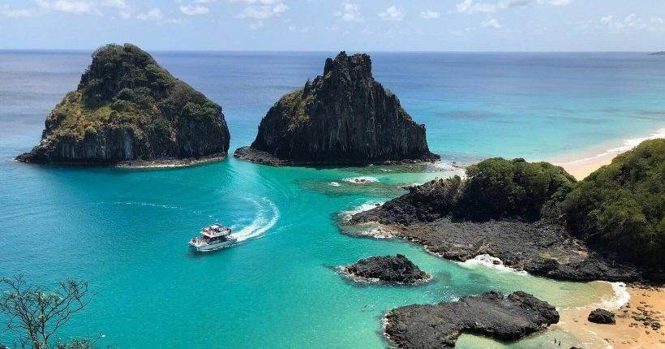
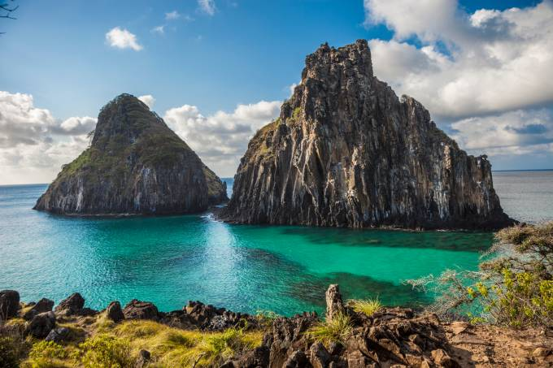
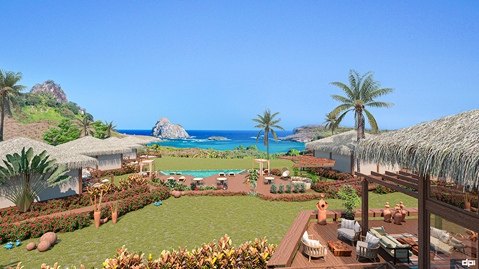

Fernando de Noronha é um arquipélago brasileiro do estado de Pernambuco. Formado por 21 ilhas, ilhotas e rochedos de origem vulcânica, ocupa uma área total de 26 km² — dos quais 17 km² são da ilha principal — e se situa no Oceano Atlântico a nordeste do Brasil continental, distando 545 km da capital pernambucana, Recife. O centro comercial da ilha é o núcleo urbano de Vila dos Remédios. A administração do Parque Nacional está atualmente a cargo do Instituto Chico Mendes de Conservação da Biodiversidade (ICMBio).[9]
Avistada pela primeira vez entre 1500 e 1502, tem sua descoberta atribuída a uma expedição comandada pelo explorador Fernão de Loronha, embora haja controvérsias; porém é certo que o primeiro a descrevê-la foi Américo Vespúcio, em expedição realizada entre 1503 e 1504. Primeira capitania hereditária do Brasil, o arquipélago sofreu constantes invasões de ingleses, franceses e holandeses entre os séculos XVI e XVIII. Em 24 de setembro de 1700, Fernando de Noronha tornou-se, por carta régia, dependência de Pernambuco, capitania com a qual já tinha uma ligação histórica. Em 1736, a ilha foi invadida pela Companhia Francesa das Índias Orientais, passando-se a chamar Isle Dauphine, porém, no ano seguinte, uma expedição enviada pelo Recife expulsou os franceses.[10]
Em 1942, com a Segunda Guerra Mundial, o arquipélago tornou-se território federal, cuja sigla era FN, passando a servir como base avançada de guerra; mas voltou à administração pernambucana quatro décadas e meia depois, no ano de 1988.[10][11][12] Atualmente Fernando de Noronha constitui um distrito estadual de Pernambuco, e é gerida por um administrador-geral designado pelo governo do estado.
Fonte: Wikipedia


